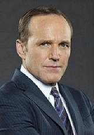

КЛАРК ГРЕГГ в роли ФИЛА КОУЛСОНА — агент «Щ. И. Т.а» и бывший директор организации. Воскрешенный, после смерти от рук Локи, Колсон
набирает свою оперативную группу, состоявшую из него самого, Мэй, Уорда, Фитца, Симмонс, а также Скай. Колсон был
воскрешён с помощью крови представителя расы Крии, о чём долгое время не знал, и после раскрытия правды и восстания
Гидры начал собирать Щ. И. Т. воедино. В конце второго сезона лишается руки, которая была заменена протезом, увеличивающим
его физическую силу и дающим Колсону несколько полезных способностей: энергетический щит, рентгеновский сканер,
удалённое управление квинджетом. В третьем сезоне у Колсона начались отношения с главой «О. Г. П. У.» Розалинд Прайс,
которую позднее убивает Уорд. Одержимый местью Колсон убивает Уорда, вследствие чего в его тело вселяется Улей. В финале
третьего сезона перестает быть директором и вновь становится агентом. После победы над Элаем Морроу был заменен на ЖМЧ и
помещен в Фреймворк (англ. Framework), где Колсон являлся школьным учителем. После временного пребывания Призрачным
гонщиком и смерти АИДЫ, Колсон и команда были похищены неизвестными и перемещены в будущее, где Земля была расколота
на куски из-за сил Дейзи, а люди стали рабами Крии, ровно как и сам Колсон. На пути к порталу домой Колсон умирает, но
никому не говорит об этом, что, по словам провидицы Елены Родригез из 2091 года, станет концом для всех. Даже после
раскрытия правды о том, что Дух Возмездия просто выжег из Фила всю биологию Крии, Колсон смирился со скорой смертью и
был похищен предложившей ему объединиться генералом Хейл, Карлом Крилом и Антоном Ивановым, пока не был спасён вместе
с Тэлботом Дейзи, взявшей на себя пост директора. После победы над Гравитоном
Колсон решил провести свои последние дни на Таити вместе с Мэй.
МИНГ-НА в роли МЕЛИНДЫ МЭЙ — агент «Щ. И. Т.а», пилот, мастер рукопашного боя, известная в «Щ. И. Т.е» как «Кавалерия»,
бывшая Н. О. Дейзи. После убийства молодой девочки-нелюдя Мэй занималась бумажной работой, но позже Колсон вербует её в
команду. После того, как выяснилось, что бывший муж Мэй — Лэш, Мелинда сдаёт его О. Г. П. У. Когда началось Восстание ГИДРЫ,
её истинная роль - быть глазами и ушами Фьюри всплыла наружу, что привело к разлому между ней и командой. Чувствуя себя
ненужной, она ушла, пытаясь найти правду, скрывающуюся за воскрешением Колсона. Она нашла её и показала Колсону, который
сожалел о том, как он повел себя с ней и пригласил её обратно в команду. Она помогла команде остановить Джона Гарретта,
а также отправилась вместе с ними на Площадку, чтобы помочь восстановить Щ.И.Т. под командованием новоиспечённого
директора Колсона. Теперь имеет свою ударную
группу. Была заменена АИДОЙ на ЖМЧ и помещена во Фреймворк, где являлась агентом Гидры. После смерти АИДЫ, Мэй и команда
были похищены неизвестными и перемещены в будущее, получив травму ноги и став рабом Крии. Узнав от нелюдя Робин Хинтон,
которую к тому же Мэй вырастила в альтернативной линии времени, план по возвращению в прошлое, Мэй поведала об этом
команде благодаря чему агенты вернулись домой. После победы над Гравитоном Мэй решила провести последние его дни с Филом
на Таити. После вернулась в «Щ. И. Т.» и столкнулась с Сержантом и его командой.
ХЛОЭ БЕННЕТ в роли ДЕЙЗИ ДЖОНСОН / ДРОЖЬ - хакер, бывший член «Наступающей волны», позже — агент «Щ. И. Т.а».
вербует её в команду как хакера. Позже раскрывается, что она Нелюдь, и после Терригенезиса получает способность
контролировать вибрацию. После встречи с отцом, матерью, нелюдьми, и раскрытия своего настоящего имени — Дейзи,
она начинает контролировать свои способности и становится образцовым агентом. Позже была подчинена Ульем, но была
спасена Лэшем и ушла из «Щ. И. Т.а» после смерти своего возлюбленного Линкольна, и становится известна как Дрожь,
а также начинает охоту на Сторожевых псов, пытаясь защитить народ нелюдей. Затем Дейзи объединяется с Призрачным
гонщиком и возвращается в организацию. Вместе с Симмонс перенесла себя в Фреймворк, где являлась агентом Гидры и
девушкой Уорда. После смерти АИДЫ, Дейзи и команда были похищены неизвестными и перемещены в будущее, где она стала
известна как Дрожь Разрушительница Миров, так как с помощью своих сил расколола Землю на куски. Боясь того, что она
может повторить эти события, Дейзи отказалась возвращаться домой, но Колсон вырубил её и забрал со всеми. Радикальными
методами Лео Фитц извлёк из её шеи ингибитор, блокировавший её способности, что приводит к расколу их дружбы. Дейзи
позже берёт на себя пост директора и после победы над Гравитоном назначает Мака лидером, так как считает, что сама
она ещё не готова. После смерти Фитца отправляется с Симмонс, Пайпер и Дэвисом в космос на поиски замороженного там
на 74 года Фитца. После возвращается на Земли и узнаёт о Сержанте и его планах.
ЙЕН ДЕ КЕСТЕКЕР в роли ЛЕОПОЛЬДА ФИТЦА - агент «Щ. И. Т.а», инженер, влюблённый в Джемму Симмонс. Колсон вербует Фитца
и Симмонс как молодых учёных. Был сильно травмирован Уордом, сильно сблизившимся с Фитцем, но в итоге смог поправиться
и после спасения Джеммы с другой планеты начал с ней отношения. Познакомившись с Холденом Рэдклиффом, Фитц разработал
Скелет. Был заменен на ЖСМ и помещен в Фреймворк, где являлся агентом Гидры и любовником Мадам Гидры. Стал единственным
из главных героев, кто не был похищен и перемещён в будущее. Чтобы спасти их, Фитц был подвергнут криогенному сну на 74
года. Позже вместе с командой вернулся домой, где женился на Джемме. Пребывание в Фреймворке не прошло без последствий:
Фитц признал в себе личность Доктора и жестоко извлёк из Дейзи блокирующий силы ингибитор, успешно закрыв разлом
«измерения страхов», после чего сдался. Он, Джемма и Йо-Йо сбежали с Маяка, чтобы уничтожить оружие Хейл, оказавшееся
инфузионной камерой. Погиб в окружении Мака и Мэй, когда на него обрушились обломки здания, когда Гравитон чуть не
уничтожил Землю, в то время как Фитц из настоящего до сих пор находится в криогенном сне глубоко в космосе. После
изменения во времени услуги Фитца и Инока в 2091 году больше не требовались. Джемма находит его в космосе и они
отправляются обратно на Землю вместе с Айзель, которая спасла их от смерти.